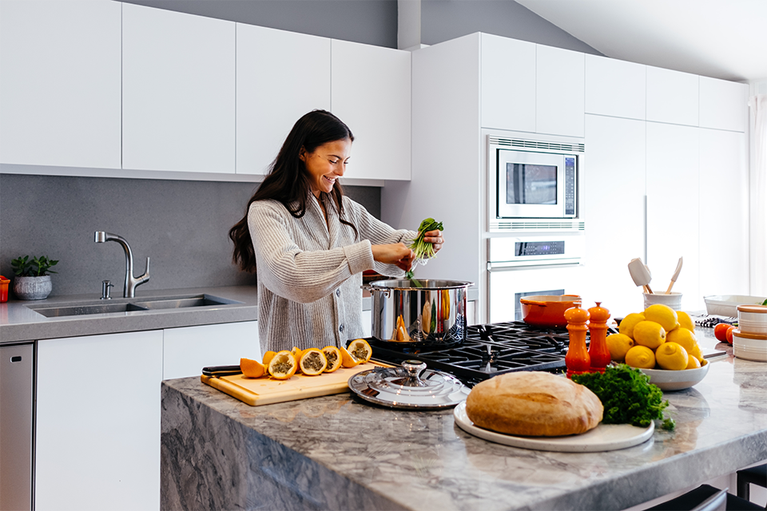

STRUČNÝ SPRIEVODCA INTUITÍVNYM STRAVOVANÍM

Intuitívne stravovanie je prístup k jedlu, pri ktorom sa učíte rozumieť vlastnému telu a jeho signálom hladu. V podstate je opakom tradičnej diéty. Neurčuje, ktorým jedlám sa vyhýbať ani čo či kedy jesť. Učí vás, že o tom dokážete najlepšie rozhodnúť vy sami. Tento článok vás podrobne oboznámi so základmi intuitívneho stravovania.
ZÁKLADY
Intuitívne stravovanie podporuje zdravý vzťah k jedlu aj k vlastnému telu. Jeho zásadou je jesť, keď ste hladní, a prestať, keď sa cítite sýti. Pre mnohých ľudí to však nie je samozrejmé. Ak sa pri rozhodovaní o tom, čo, kedy a ako jesť, spoliehate na knihy o diétach a takzvaných odborníkov, môžete stratiť dôveru vo vlastné telo a jeho signály. Pri intuitívnom stravovaní sa možno budete musieť naučiť opäť dôverovať svojmu telu. Prvým krokom je rozlíšiť telesný a emocionálny hlad.
Telesný hlad. Je to prirodzený signál, že telo potrebuje doplniť živiny. Prichádza postupne a môže sa prejaviť škvŕkaním v žalúdku, únavou alebo podráždenosťou. Po jedle ustúpi. Emocionálny hlad. Vychádza z emocionálnych potrieb. Smútok, osamelosť či nuda môžu vyvolať chuť na jedlo, často na niečo, čo prináša útechu. Po jedle sa potom môžu dostaviť výčitky a odpor voči sebe samému.
10 HLAVNÝCH ZÁSAD
Tribole a Resch vo svojej knihe o intuitívnom stravovaní opisujú desať základných zásad tohto prístupu.
1. OPUSTITE DIÉTNE MYSLENIE
Diétne myslenie vychádza z predstavy, že existuje diéta, ktorá vám bude fungovať. Intuitívne stravovanie je opakom diétneho prístupu.
2. REŠPEKTUJTE SVOJ HLAD
Hlad je prirodzený signál tela. Keď pocítite prvé známky hladu, najedzte sa. Ak budete čakať, kým vyhladnete, pravdepodobne zjete viac, než potrebujete.
3. UZAVRITE MIER S JEDLOM
Prestaňte s jedlom bojovať. Zbavte sa predstáv o tom, čo by ste mali jesť a čo by ste si mali odopierať.
4. SPOCHYBNITE VNÚTORNÉ PRAVIDLÁ O JEDLE
Jedlo netreba deliť na dobré a zlé. To, čo zjete alebo vynecháte, neurčuje vašu hodnotu. Keď sa takéto myšlienky objavia, skúste ich spochybniť.
5. VNÍMAJTE POCIT SÝTOSTI
Telo vám dáva najavo hlad aj sýtosť. Všímajte si signály príjemnej sýtosti, ktoré vám hovoria, že ste už zjedli dosť. Počas jedla si všímajte, ako vám chutí a ako veľmi ste hladní alebo sýti.
6. OBJAVTE POTEŠENIE Z JEDLA
Spríjemnite si chvíle pri jedle. Dajte si jedlo, ktoré vám robí dobre. Sadnite si k nemu a vychutnajte si ho. Keď vám jedenie prináša potešenie, možno vám na spokojnosť postačí menšie množstvo jedla.
7. REŠPEKTUJTE SVOJE POCITY AJ BEZ JEDLA
Emocionálne jedenie je jedným zo spôsobov, ako sa vyrovnať s pocitmi. Hľadajte aj spôsoby, ktoré nesúvisia s jedlom. Choďte napríklad na prechádzku, meditujte, píšte si denník alebo zavolajte niekomu blízkemu. Všímajte si chvíle, keď pocit, ktorý pokladáte za hlad, vychádza z emócií.
8. REŠPEKTUJTE SVOJE TELO
Oceňte, čo vaše telo dokáže a aké je krásne také, aké je. Doprajte si viac láskavosti aj vtedy, keď máte chuť kritizovať svoj vzhľad alebo to, čo na sebe považujete za nedostatky.
9. HÝBTE SA A VNÍMAJTE ROZDIEL
Nájdite si pohyb, ktorý vás baví. Zamerajte sa na to, ako vám pohyb dodáva energiu, silu a chuť do života, a presuňte pozornosť od chudnutia k tomu, ako sa cítite.
10. DBAJTE NA SVOJE ZDRAVIE LÁSKAVÝM PRÍSTUPOM K VÝŽIVE
Jedlo by vám malo chutiť a mali by ste sa po ňom cítiť dobre. Vaše zdravie ovplyvňujú najmä dlhodobé stravovacie návyky. Jedno jedlo či jedna desiata o vašom zdraví nerozhodnú.
PRÍNOSY
Výskum v tejto oblasti sa stále rozvíja a doteraz sa zameriaval najmä na ženy. Štúdie spájajú intuitívne stravovanie so zdravšími psychickými postojmi, nižším indexom telesnej hmotnosti (BMI) a udržaním hmotnosti. Súvislosť s chudnutím zatiaľ nepreukázali. Jedným z hlavných prínosov intuitívneho stravovania je lepšie duševné zdravie. Účastníci štúdií si zlepšili sebaúctu, vnímanie vlastného tela a celkovú kvalitu života. Zároveň pociťovali menej príznakov depresie a úzkosti. V programoch intuitívneho stravovania ľudia častejšie vytrvajú a osvojené návyky si udržia dlhšie než pri diéte. Ďalšie štúdie skúmali stravovacie správanie a postoje žien a zistili, že u žien s výraznejšími znakmi intuitívneho stravovania sa menej často vyskytuje narušené stravovacie správanie.
ZHRNUTIE
Nové výskumy naznačujú, že intuitívne stravovanie súvisí so zdravším vzťahom k jedlu aj k sebe samému a že sa ho možno naučiť prostredníctvom cielených programov.